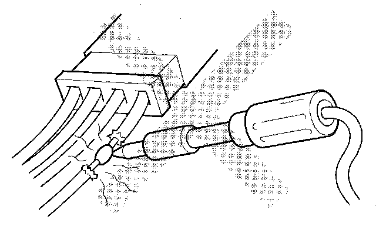
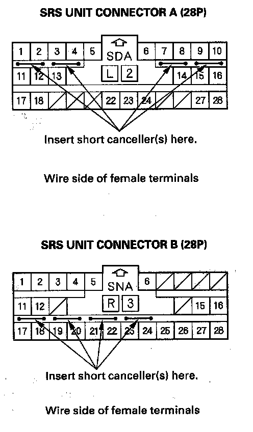

Technician Safety Information
SRSPrecautions and Procedures
General Precautions
Please read the following precautions carefully before servicing the airbag system. Observe the instructions described in this manual, or the airbags could accidentally deploy and cause damage or injuries.
- Except when doing electrical inspections, always turn the ignition switch OFF, ground the SCS line with the HDS to take the PCM out of active status, disconnect the negative cable from the battery, and wait at least 3 minutes before beginning work.
NOTE: The SRS memory is not erased even if the ignition switch is turned OFF or the battery cables are disconnected from the battery.
- Use replacement parts which are manufactured to the same standards and quality as the original parts. Do not install used SRS parts. Use only new parts when making SRS repairs.
- Carefully inspect any SRS part before you install it. Do not install any part that shows signs of being dropped or improperly handled, such as dents, cracks or deformation.
- Before removing any of the SRS parts (including the disconnection of the connectors), always disconnect the SRS connector.
- Use only a digital multimeter to check the system. If it is not a Honda multimeter, make sure its output is 10 mA (0.01 A) or less when switched to the lowest value in the ohmmeter range. A tester with a higher output could cause accidental deployment and possible injury.
- Do not put objects on the front passenger's airbag.
- The original audio system has a coded theft protection circuit. Make sure you have the anti-theft codes for the audio system and the navigation system (if equipped)
- Before returning the vehicle to the client, enter the anti-theft codes for the audio system and the navigation system (if equipped)
- If you disconnects the battery cable, the power tilt and telescopic steering wheel system needs to be reset when you reconnect the battery cable. Do the Steering Column Position Memorization.
Steering-Related Precautions
Cable Reel Alignment
- Misalignment of the cable reel could cause an open in the wiring, making the SRS system, remote steering wheel controls, and the horn inoperative. Center the cable reel whenever the following is performed.
- Installation of the steering wheel
- Installation of the cable reel
- Installation of the steering column
- Other steering-related adjustment or installation
- Do not disassemble the cable reel.
- Do not apply grease to the cable reel.
- If the cable reel shows any signs of damage, replace it with a new one. For example, if it does not rotate smoothly, replace the cable reel.
Airbag Handling and Storage
Do not disassemble an airbag. It has no serviceable parts. Once an airbag has been deployed, it cannot be repaired or reused.
For temporary storage of an airbag during service, observe the following precautions.

- Store the removed airbag with the pad surface up. Never put anything on the airbag.
- To prevent damage to the airbag, keep it away from any oil, grease, detergent, or water.
- Store the removed airbag on a secure, flat surface away from any high heat source (exceeding 200° F/ 93° C).
- Never do electrical tests on the airbags, such as measuring resistance.
- Do not position yourself in front of the airbag during removal, inspection, or replacement.
- For proper disposal of a damaged airbag, refer to airbag disposal.
- The side curtain airbag inflator assembly is a long, jointed part containing an inflator (A), a flexible bag (B), and brackets (C).
- When removing or installing the side curtain airbag inflator assembly, never handle the flexible bag (B).
SRS Unit, Front and Side Impact Sensors, Driver's Seat Position Sensor, Front Passenger's Weight Sensor Unit and Front Passenger's Weight Sensors
- Turn the ignition switch OFF, disconnect the negative cable from the battery, and wait at least 3 minutes before beginning installation or replacement of the SRS unit or disconnecting the connectors from the SRS unit.
- Be careful not to bump or impact the SRS unit, front impact sensors, or side impact sensors when the ignition switch is ON (II), or for at least 3 minutes after the ignition switch is turned OFF.
- During installation or replacement, be careful not to bump (by impact wrench, hammer, etc.) the area around the SRS unit, front impact sensors, or side impact sensors. The airbags could accidentally deploy and cause damage or injury.
- After a collision in which a front airbag, side curtain airbags, or a seat belt tensioner deployed, go to Component Replacement/Inspection after Deployment. After a collision in which the airbags or the side airbags did not deploy, inspect for any damage or any deformation on the SRS unit, front impact sensors, rear safing sensor, and side impact sensors. Replace all damaged parts.
- Do not disassemble the SRS unit, front impact sensors, side impact sensors, driver's seat position sensor, front passenger's weight sensor unit, and front passenger's weight sensors.
- Be sure the SRS unit, front impact sensors, and side impact sensors are installed securely with the mounting bolts torqued to 9.8 N.m (1.0 kgf.m, 7.2 lbf.ft).
- Do not spill water or oil on the SRS unit or the side impact sensors, and keep them away from dust.
- Store the SRS unit, front impact sensors and side impact sensors in a cool (less than 104° F/40° C) and dry (less than 80 relative humidity, no moisture) area.
Wiring Precautions
Some of the SRS wiring can be identified by special yellow outer covering, and the SRS connectors can be identified by their yellow color. Observe the instructions.

- Never attempt to modify, splice, or repair SRS wiring. If there is an open or damage in SRS wiring, replace the harness.
- Be sure to install the harness wires so they do not get pinched or interfere with other parts.
- Make sure all SRS ground locations are clean, and grounds are securely fastened for optimum metal-to-metal contact. Poor grounding can cause intermittent problems that are difficult to diagnose.
- Do not use any silicone based cleaners or lubricants on any SRS connectors or terminals.
Precautions for Electrical Inspections
- When using electrical test equipment, insert the probe of the tester into the wire side of the connector. Do not insert the probe of the tester into the terminal side of the connector, and do not tamper with the connector.
- Use a U-shaped probe. Do not insert the probe forcibly.
- Use specified service connectors in troubleshooting. Using improper tools could cause an error in inspection due to poor metal-to-metal contact.
Spring-Loaded Lock Connector
Some SRS system connectors have a spring-loaded lock.
Front Airbag Connectors
Disconnecting
To release the lock, pull the spring-loaded sleeve (A) toward the stop (B) while holding the opposite half of the connector. Then pull the connector halves apart. Be sure to pull on the sleeve and not on the connector.
Connecting
To reconnect, hold the pawl-side connector, and press on the back of the sleeve-side connector in the direction shown. As the two connector halves are pressed together, the sleeve (A) is pushed back by the pawl (C). Do not touch the sleeve.
Side Airbag Connector
Disconnecting
To release the lock, pull the spring-loaded sleeve (A) toward the stop (B) while holding the opposite half of the connector. Then pull the connector halves apart. Be sure to pull on the sleeve and not on the connector half.
Connecting
Hold both connector halves, and press them firmly together until the projection (C) of the sleeve-side connector clicks.
Opening the SRS Unit Shorting Connectors for Diagnosis
Special Tools Required
SRS short canceller 070AZ-SAA0100
NOTE:
- To prevent damaging the connector cavity, insert the short canceller straight into the cavity from the terminal side.
- Before installing the short canceller, wash it with neutral detergent, then dry it with compressed air.
- Do not use the short canceller if it is damaged.
- Make sure to remove the short canceller before reconnection.
When SRS unit connectors A or B are disconnected, a short circuit is created in the connector by its own function to prevent an airbag deployment. The circuit may need to be open sometimes when diagnosis is done on the system. Insert the short canceller (No. 070AZ-SAA0100) in the specified cavities when it is necessary to keep the circuit open for diagnosis.

Terminal numbers are shown from the wire side of the female terminals. Insert the short canceller(s) into the cavities on the terminal side of the connector.
Seats with Side Airbags
Seats with side airbags have a "SIDE AIRBAG" label on the seat-back.
- When cleaning, use a damp cloth to clean the seat. Do not soak the seat with liquid. Do not spray steam on the seat.
- Do not repair a torn or frayed seat-back cover. Replace the seat-back cover.
- After a collision where the side airbag was deployed, replace the side airbag and seat frame with new parts. If the seat-back cushion is split, it must be replaced.
- Never put aftermarket accessories on the seat (covers, pads, seat heaters, lights, etc.).
Disconnecting System Connectors
Turn the ignition switch OFF disconnect the negative cable from the battery, and wait at least 3 minutes before beginning the following procedures.
- Before disconnecting the cable reel 4P connector (1), disconnect the driver's airbag4P connector (2).
- Before disconnecting SRS unit connector B from the SRS unit, disconnect both seat belt tensioner 4P connectors (3, 4).
1. Disconnect the negative cable from the battery, and wait at least 3 minutes.
Driver's Airbag
2. Remove the access panel (A) from the steering wheel, then disconnect the driver's airbag 4P connector (B) from the cable reel.
Front Passenger's Airbag
3. Remove the glove box, then disconnect the front passenger's airbag 4P connector (A) from the dashboard wire harness.
Side Airbag
4. Disconnect both side airbag 2P connectors (A) from the floor wire harness.
Side Curtain Airbag
5. Remove the quarter pillar trim.
6. Disconnect both floor wire harness 2P connectors (A) from the side curtain airbags.
Seat Belt Tensioner
7. Remove the B-pillar lower trim, then disconnect both floor wire harness 4P connectors (A) from the seat belt tensioners.
SRS Unit
8. Remove the driver's center console trim, SRS unit connector A, SRS unit connector B, and SRS unit connector C from the SRS unit.